1/1
←
→
Product Arena
Cursor na prática
Para PMs, Builders e pessoas não desenvolvedoras
Arthur Castro · Lucas Mattos
Seus Instrutores
Lucas Mattos
AI Partner @ Hopelabs
- ☕️ Mineiro uai
- 🤖 Apaixonado por gambiarra desde 2012
- ⛵️ Mergulhador com uma quase travessia do Atlântico em um barco à vela
Lugares onde ajudei a construir produtos:
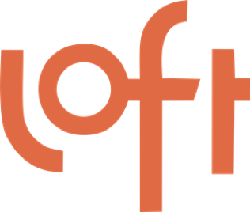
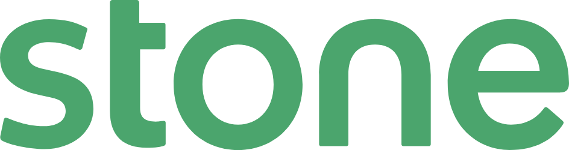
Seus Instrutores
Arthur Castro
CEO & Founder @ Product Arena
- 🍼 Full time Ivy's Dad
- 🪂 Paraquedista com uma tentativa de atropelar o avião
- 🗣️ Comentador de previsões apocalípticas no Podcast do Papo na Arena
Lugares onde ajudei a construir produtos:
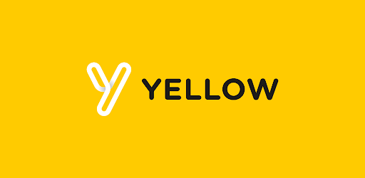
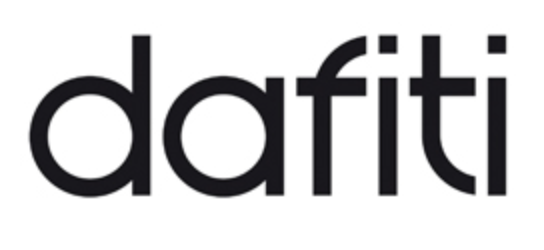
Filosofia do curso
Cursor como copiloto
Não como piloto automático — você decide, a IA amplia
01
Mão na massa
Pra quem gosta de construir e entender o que está sendo feito em cada passo.
02
Ampliar decisões
Use a IA para enxergar mais opções, não para decidir no seu lugar.
O que vamos fazer
O que vamos aprender
⚙️
Configurar seu Workspace — Setup, Rules, Commands.
🚀
Otimizar o uso do Cursor — Ask, Plan, Agent e contexto.
📋
Adaptar ao ciclo de produto — PRD, dados, design system, MCPs (ex.: Notion), apresentações.
🎯
Construir seu protótipo — do novo fluxo de onboarding ao localhost; fechar com Start My Day no Cursor.
Diferenças
A diferença do Cursor
Ir além da conversa: par técnico ao lado, executando de verdade
💬 Conversa sobre código
❌ Não vê seus arquivos
❌ Não vê seus arquivos
🎨 Gera UI visual
❌ Sandbox isolado
❌ Sandbox isolado
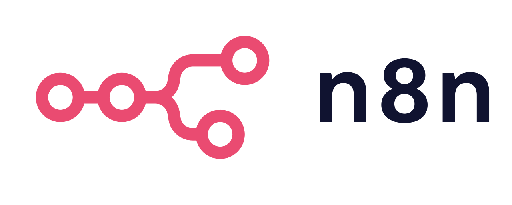
⚡ Automação visual
❌ Fluxos predefinidos
❌ Fluxos predefinidos
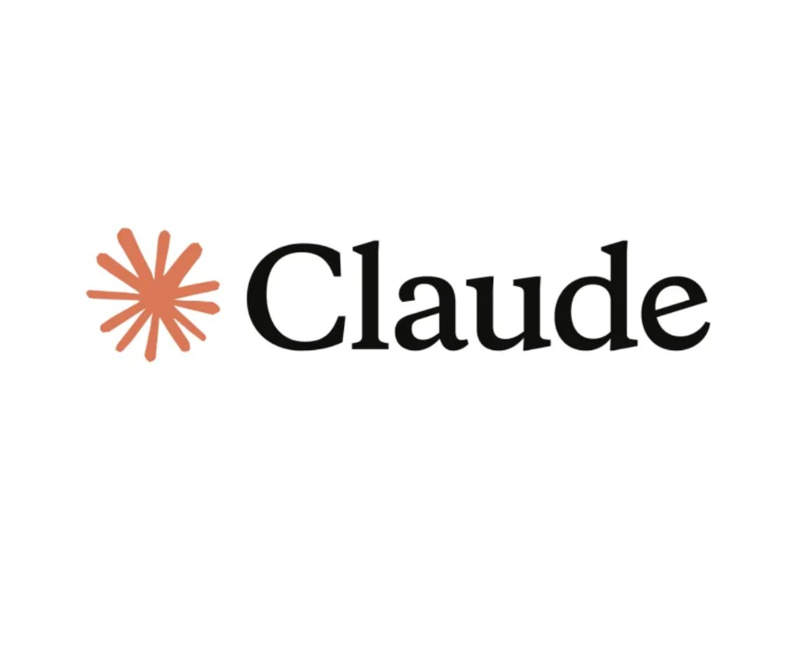
Claude🧠 Raciocínio potente
❌ Só sugere, não executa
❌ Só sugere, não executa
🤖 Par técnico
✅ Lê, escreve, executa
✅ Lê, escreve, executa
📖
Material — Comparação detalhada em cursor-vs-outras-ferramentas.md na pasta de referência.
Antes de começar
Tudo pronto?
Checklist para o curso
✔
Cursor instalado + Plano Pro
✔
Conta GitHub ativa
✔
Conta Notion criada
✔
Acesso ao Linear
✔
Link do material de acompanhamento recebido
✔
Workspace modelo baixado e aberto no Cursor
Guia do aluno · edição 3
Agenda do dia
Do workspace aos MCPs e ao Start My Day — alinhado aos blocos do material escrito.
☕ Manhã
Workspace; conceitos (IDE, GitHub, clone); modos Ask, Plan, Agent (+ Debug/Multitask em visão geral); Rules, Commands, Skills.
10:00 – 12:30
🍽️ Pausa almoço
Intervalo para descanso e refeição.
12:30 – 14:00
🧠 Meio do dia
Ciclo de produto (Arena Cash, dados, slides, PRD, Linear) + bloco MCPs (Notion, Linear).
14:00 – 15:30
☕ Café da tarde
Intervalo para café e retomada.
15:30 – 15:45
🚀 Tarde
Protótipo (localhost, Git, GitHub Pages, Vercel opcional) + construir o seu Start My Day.
15:45 – 18:00
Demo
Seu dia pode começar com um comando
Case “Start my day” — o Cursor na sua rotina
Você comanda. Ela executa.
Workspace
Setup — Abrir seu workspace
1. Baixe o workspace padrão do curso
Antes da aula, você recebe um link para baixar o pacote do workspace modelo. Salve no seu computador e, se for arquivo compactado (
.zip), extraia até ficar com uma pasta com o material.2. Abra a pasta no Cursor
No Cursor: File → Open Folder… (Abrir pasta) e selecione a pasta que você baixou (a pasta extraída, não o
.zip). É assim que o Cursor “enxerga” seus arquivos.3. Use sempre o mesmo workspace
A partir de agora, todos os exercícios e projetos vão viver aqui, no mesmo workspace.
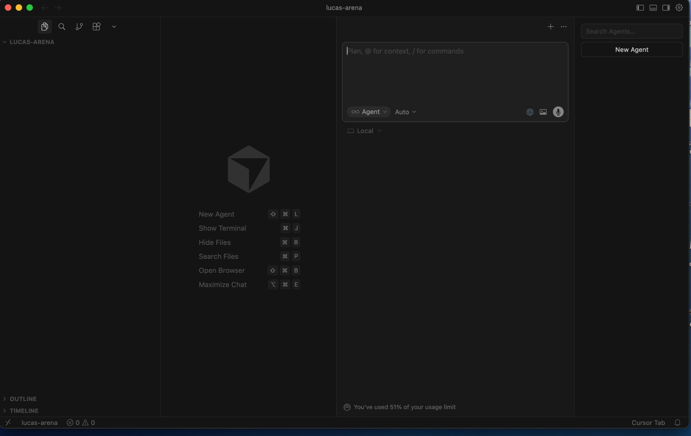
📁
Recomendação — Guarde ou mova essa pasta para a raiz de Documentos (ou outra pasta de trabalho fixa), em vez de deixá-la só em Downloads, onde arquivos temporários somem mais facilmente.
Abrindo parênteses
Cursor e acesso à máquina
Como um IDE: o Cursor navega nos arquivos do seu computador — assim como o terminal. Cada máquina tem seu jeito: caminhos, permissões e atalhos podem variar. Ele “vê” o que você abre.
Exercício · Ask
Modo Ask
⏱ 10 minutos
Pergunte: “O que você é capaz de fazer?”
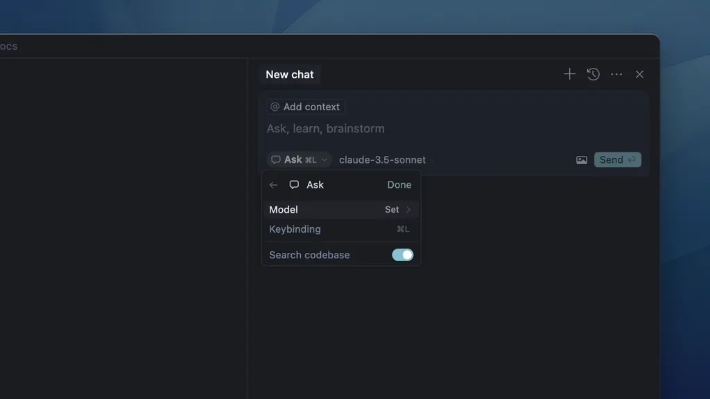
Fundamentos
O que é o GitHub?
Controle de versão e colaboração
Plataforma onde repositórios = projetos versionados na nuvem.
git cloneBaixar uma cópia do projeto no seu PC.
📖
Dicionário — Clone = copiar do GitHub · repo = repositório = diretório/pasta

Exercício · Plan
Plan — Clonando o repositório do curso
⏱ 20 minutos · Cursor na prática — Product Arena
O prompt
“Monte um plano para eu clonar
https://github.com/Product-Arena/cursor-para-pms.git”
Depois, clique no botão Build gerado pelo plano.
https://github.com/Product-Arena/cursor-para-pms.git”

Exercício · Ask
Ask com contexto
⏱ 5 minutos
Arraste a pasta que você acabou de clonar para o chat. Depois pergunte: “O que essa pasta faz?” — o Cursor lê o que você coloca no contexto.
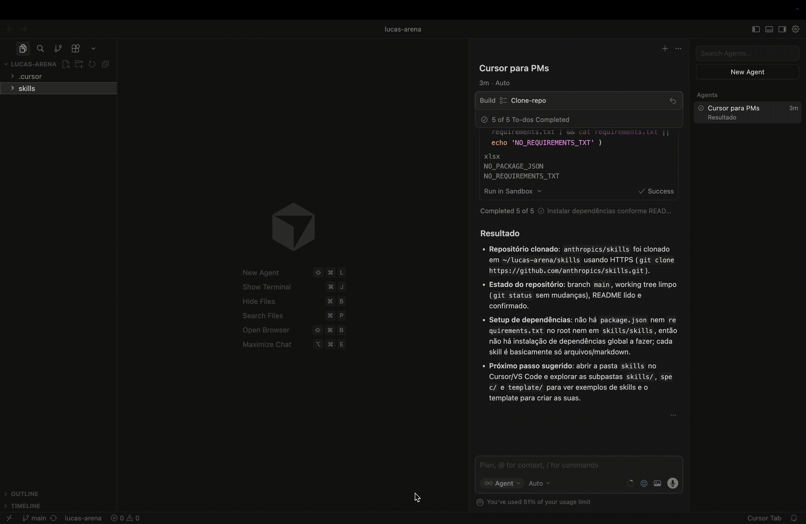
Modo Agent
Modo Agent
A IA propõe e aplica
Alterações nos seus arquivos; você revisa e aprova cada mudança.
Mão na massa
É o modo que mais esperamos do Cursor: execução no seu ambiente.

Abrindo parênteses
Allowlist — O que o agent pode executar
Segurança e Controle
Você define exatamente quais comandos o Cursor pode rodar. Nada acontece sem sua permissão explícita.
Configuração Preventiva
Antes de clonar repositórios desconhecidos, revise o que está permitido na sua allowlist.
💡
Pro tip — Crie um agent em modo Ask, fixe-o (Pin) e pergunte: “O que o comando
cp faz?” — E evite liberar rm e git commit sem revisão.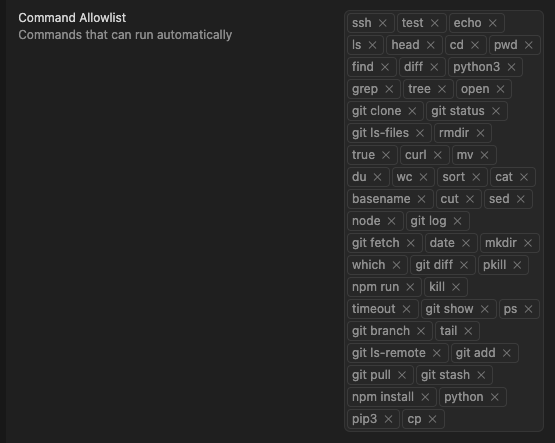
Abrindo parênteses
Modelos e contexto
Escolha de modelos
Claude, GPT e outros nas configurações do Cursor — você define qual modelo responde em cada modo.
Janela de contexto
Quantos tokens o modelo “enxerga” de uma vez. Arquivos, pastas e histórico no contexto expandem ou limitam o que a IA considera.
💡
Pro tip — Composer-1 para MCPs e tool calls; Gemini 3 Pro para frontend.

Modos
Debug e Multitask
Além de Ask, Plan e Agent, o Cursor oferece estes modos — uso mais pontual e avançado.
Debug
Focado em investigar erros, logs e comportamento do código ou do fluxo — ajuda a isolar o que quebrou antes de pedir mudanças grandes.
Multitask
Orquestra várias frentes em paralelo (por exemplo, mais de uma tarefa ou agente). Útil quando o trabalho se divide em passos simultâneos.
📌
Ciclo de produto — aqui só contextualizamos Debug e Multitask; você pode explorar estes modos quando precisar no dia a dia.
Product Arena
Três recursos que trabalham com os agentes
Na sequência: visão geral rápida; depois aprofundamos nesta ordem — Rules, Commands, Skills.
Rules
Instruções persistentes (manual de estilo, convenções). O agente aplica sem você repetir o contexto em todo prompt.
Commands
Atalhos que disparam fluxos prontos — um
/comando vira um roteiro inteiro no projeto.Skills
Pacotes de comportamento e templates instaláveis (marketplaces). Estendem o que o agente sabe fazer.
Product Arena
Rules —
Seu manual de estilo
Seu manual de estilo
Por que importa:
O Cursor segue convenções do seu projeto (PRD, código, design) automaticamente, sem você precisar reexplicar o contexto a cada nova interação.
O Cursor segue convenções do seu projeto (PRD, código, design) automaticamente, sem você precisar reexplicar o contexto a cada nova interação.
Diferenças de apply:
alwaysApply: true — rule sempre ativa.
alwaysApply: false — ativa só quando os arquivos correspondem ao padrão (ex.: prd-*.md). Evite excesso: ocupa contexto.
alwaysApply: true — rule sempre ativa.
alwaysApply: false — ativa só quando os arquivos correspondem ao padrão (ex.: prd-*.md). Evite excesso: ocupa contexto.
.cursor/rules/prd-template.mdc
--- description: "PRD Template and Guidelines" globs: "documents/prd-*.md" alwaysApply: false --- # PRD Template Usage ## When to Use - Transforming docs into PRD format - Creating new product requirements ## Template Structure 1. **Background** (H2) Context regarding the problem... 2. **Objectives** (H2) Key measurable goals... 3. **Features** (H2) Detailed functional requirements...
Product Arena
Commands —
Macros em linguagem natural
Macros em linguagem natural
Por que importa:
Um comando como
Um comando como
/start-a-business dispara um fluxo completo e padronizado sem você precisar repetir o prompt inteiro a cada vez.
.cursor/commands/start-a-business.md
--- description: "Start a new business venture: create project structure..." --- **When user runs `/start-a-business`:** ## Step 1: Capture Initial Information Ask the user these questions in sequence: 1. **"What's the name of your business/idea?"** - Capture: business name - Use this to create the project folder name (kebab-case) 2. **"Give me a brief description (1-2 sentences)"** - Capture: brief description - This will be used in initial Product Strategy ## Step 2: Create Project Structure Automatically Create the following structure: projects/[business-name]/ ├── documents/ │ └── README.md └── README.md
Product Arena
O que são Skills?
Extensões de comportamento
Tarefas, fluxos e templates. Explorados em skills.sh, no repo oficial anthropics/skills e na lista awesome-agent-skills.
Onde ver o que está instalado
Cursor → Settings para conferir os skills ativos; no curso também copiamos pastas com
SKILL.md para .cursor/skills/.
💡
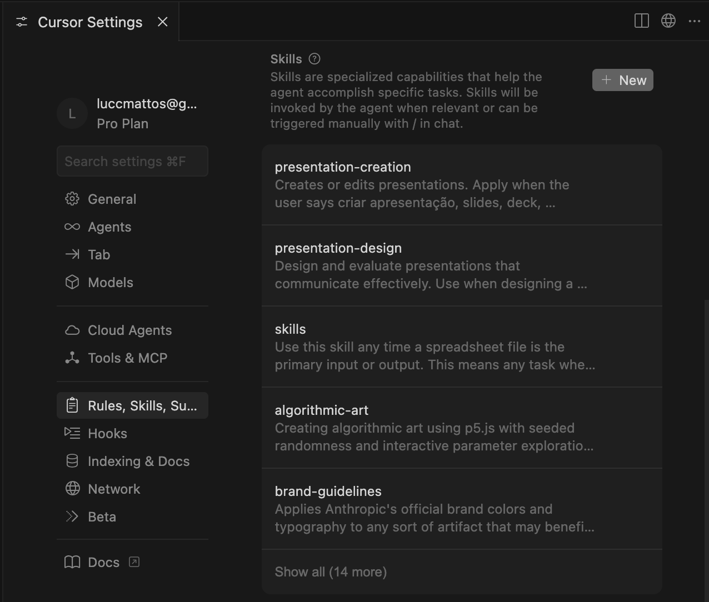
Sugestão de conteúdo
Cursor em ação
Demo completa: Cursor no lugar de toda a stack de negócios
Greg Isenberg — vídeo em inglês; visão de uso cotidiano do Cursor

Antes do recap
Workspace organizado — espaço limpo
⏱ 5 minutos — reconheça a estrutura de pastas e abra trechos da rule
.cursor/rules/general-guidelines.mdc.A receita não é mágica — organização vira contexto. Riscos do Cursor criar muitas coisas — use a regra como guardião.
📁 workspace-cursor/
├── 📁 .cursor/
commands, rules, skills, templates
├── 📁 analises/
├── 📁 projetos/
├── 📁 docs/
├── 📁 learning/
└── 📁 repos/
📁 .cursor/
Rules, Skills e MCPs. O agente "já sabe" antes de você pedir.
📊 analises/
Cada análise com SQL, charts e docs juntos — vira contexto na hora.
🚀 projetos/
PRD, design system e código no mesmo lugar — arrastar pasta = contexto completo.
📖
Material — Consulte workspace-cursor-modelo.md na pasta de referência.
💡
Pro tip — A rule
.cursor/rules/general-guidelines.mdc evita poluição do workspace. Trechos abaixo..cursor/rules/general-guidelines.mdc (Cursor guidelines)
## Cursor guidelines Keep the workspace organized and avoid unnecessary files. ### Prefer the chat Respond in the chat (do not create files) for: - Checklists and validation lists - Step-by-step setup instructions (APIs, OAuth, etc.) - Short summaries and reference notes - One-off instructions that are not official project documentation ### Create files only when - The user explicitly asks to save or create a file - It is a project artifact (README, PRD, design system, etc.) per project structure - The content is too large for the chat or needs to be versioned/reused
Retorno do almoço
Recap e perguntas
💬
Ask & Contexto: Conversar com arquivos e pastas
⚡
Agent Mode: A IA agindo no seu ambiente
🛡️
Segurança: Allowlist + desabilitar deleção de arquivos
📋
Rules: Manual de estilo — o Cursor segue convenções sem reexplicar
⌨️
Commands: Macros em linguagem natural (ex.: /create-prd)
🧩
Skills: Pacotes de capacidade — output consistente de primeira (ex.: pptx, design)
Alguma dúvida antes de colocar tudo isso em prática?
Meio do dia — 14:00–15:30
Bloco 3 — Cursor no ciclo de produto
🧠 Meio do dia
14:00 – 15:30
Conteúdo
- Agente PM — Arena Cash
- Análise de dados — demo (instrutor) + exercício com arquivo de exemplo
- Visualização em HTML seguindo o design system da marca
- Como lideranças gostam de receber análises (subagent Product Manager)
- Slides — primeira versão (PPTX, 6 slides)
- Instalar Skill — clone de
anthropics/skills→.cursor/skills/ - Slides — segunda versão com Skill + template Coral (HTML)
- Notion — documento da análise via MCP
Exercícios
- Análise de dados (arquivo de exemplo do repo)
- Visualização HTML + design system
- Apresentação PPTX — 6 slides
- Instalar Skill (clone Anthropic) antes da versão com Skill
- Slides HTML — Skill + template Coral
- Notion + MCP — publicar one-page da análise
Como eu uso sendo PM · 02
Uma semana de análise em uma hora
❓
Pergunta de negócio
"Merchant carousel converte melhor que item?"
🔌
MCP Snowflake
Cursor acessa, escreve SQL, executa
📊
Gráficos gerados
Funil, timeseries, breakdowns
📄
Dashboard + docs
Pronto para stakeholder
Resultado: Análise AB completa em ~2h, não 2 semanas.
WPP AB merchant vs item carousel
AB pós
Pré ref
Variante
Funil
Resumo
Variante
Controle
charts/ sql/ docs/
Abrindo parênteses
Design System
Documento que define a identidade visual para agentes de IA aplicarem consistentemente.
❌ Sem Design System
Cada tela com cores diferentes, botões mudam de estilo, "deixa bonitinho" = retrabalho.
✅ Com Design System
Paleta consistente, componentes padronizados, especificação clara para o agente.
🔗
Recurso — Explore getdesign.md — coleção de DESIGN.md inspirados em Vercel, Stripe, Linear, Notion...
# DESIGN.md (Arena)
accent: #FF5757
bg-primary: #f5f5f5
font: Inter, sans-serif
style: Notion-like, clean
icons: emojis
Vercel
Stripe
Linear
Notion
+70
Ciclo de produto · Contexto
Crie um subagent Product Manager
Antes dos exercícios, use o comando nativo
/create-subagent para criar um Product Manager focado na Arena Cash.1. Criar com comando nativo
No chat do Cursor, rode:
/create-subagent e envie o prompt: "Me ajude a criar um subagent para atuar como Product Manager da Arena Cash."2. Validar estrutura gerada
O esperado é criar a pasta
AGENTS/ na raiz do projeto com o arquivo product-manager.md contendo instruções de atuação.3. Testar em português
Exemplo: “Atue como Product Manager da Arena Cash e resuma o negócio em 3 bullets, com foco em ativação, churn e prioridades do Q2.”
📌
Objetivo — Ter um PM especializado no contexto da Arena Cash para apoiar análise, PRD, tarefas e protótipo.
Exercício · Bloco 3
Análise de dados — Arena Cash
⏱ 25 minutos
Assuma o papel do PM da Arena Cash e analise o dataset semanal para identificar oportunidades de melhoria no onboarding.
1. Assumir o papel de PM
Referencie
@.cursor/agents/product-manager.md e o dataset @learning/Cursor para PMs por Product Arena/case arenacash/dados-semanais-arenacash.csv.2. Responder 3 perguntas
Identifique principal oportunidade/problema, métrica mais fora do esperado e recomendação para liderança baseada nos números.
3. Salvar no workspace
Resposta objetiva em markdown e arquivo salvo em
@docs para uso nos próximos exercícios.
📖
Guia do aluno — Exercício 06 (análise do dataset semanal + arquivo em
docs/).Prompt sugerido
assuma o papel do PM @.cursor/agents/product-manager.md e faca uma analise dos @learning/Cursor para PMs por Product Arena/case arenacash/dados-semanais-arenacash.csv para identificar quais as oportunidas para melhorar o fluxo de onboarding. # Análise de dados — Arena Cash Atue como o subagent Product Manager da Arena Cash. Com base no arquivo [dataset do repo] e nos documentos de contexto: 1. Qual é a principal oportunidade ou problema que os dados revelam? 2. Qual métrica está mais fora do esperado e por quê? 3. Qual recomendação você daria à liderança com base nesses números? Responda de forma objetiva. Salve os achados em um arquivo em md na pasta docs aqui no workspace.@docs
Exercício · Bloco 3
Visualização em HTML + design system
⏱ 20 minutos
Transforme os insights da análise em uma página HTML com gráficos, seguindo o design system da Arena Cash — pronta para mostrar a um stakeholder.
1. Gerar a visualização
Peça ao agente para criar um arquivo
analises/dashboard.html com os principais números em cards e gráficos simples.2. Aplicar o design system
Referencie o arquivo
design-system.md do repo. Peça que cores, fontes e estilo sigam o padrão da marca.3. Abrir no navegador
Use "Open in browser" ou
python3 -m http.server para visualizar e validar antes de avançar.Prompt sugerido
# Dashboard HTML — insights da análise Com base nos achados em analises/insights-arena-cash.md e no design system em design-system.md: Crie analises/dashboard.html com: - Cards com as 3 métricas principais - Um gráfico de barras (dados do dataset) - Seção de recomendação com destaque visual Use as cores, fontes e estilo do design system. Sem frameworks externos — HTML + CSS inline.
Exercício · Bloco 3
Criar apresentação PPTX
⏱ 15 minutos
Monte uma apresentação de 6 slides a partir da análise — do contexto até o próximo passo — usando a skill de PPTX.
Estrutura dos 6 slides
1. Capa · 2. Agenda
3. Contexto · 4. Resultado da análise
5. Próximos passos · 6. Agradecimento
3. Contexto · 4. Resultado da análise
5. Próximos passos · 6. Agradecimento
Como gerar
Use o prompt abaixo com os insights em mãos. O agente usa a skill de PPTX para estruturar e exportar o arquivo.
📌
Salvar em
documents/apresentacao-arena-cash.pptxPrompt sugerido
# Apresentação PPTX — análise de produto Com base nos insights em analises/insights-arena-cash.md e no design system em design-system.md: Crie uma apresentação PPTX com 6 slides: 1. Capa (nome da análise + data) 2. Agenda 3. Contexto do negócio 4. Resultado da análise (métricas + gráfico) 5. Próximos passos recomendados 6. Agradecimento Tom executivo. Uma mensagem por slide. Salvar em documents/apresentacao-arena-cash.pptx.
Exercício · Bloco 3
Instalar uma Skill (clone Anthropic)
⏱ 10 minutos · antes da segunda versão dos slides
Clone
https://github.com/anthropics/skills, escolha uma pasta em skills/ e copie para .cursor/skills/<nome>/ no workspace (precisa existir SKILL.md).
🔗
Terminal (exemplo)
# shallow clone git clone --depth 1 https://github.com/anthropics/skills.git anthropic-skills-reference # copiar uma skill (ajuste o nome da pasta) # ex.: cp -R anthropic-skills-reference/skills/theme-factory .cursor/skills/theme-factory
Exercício · Bloco 3
Slides com Skill — segunda versão
⏱ 10 minutos
Refaça os slides usando a Skill que você instalou no exercício anterior + template Coral — padronização visual sem reescrever o conteúdo de negócio.
Como funciona
A Skill em
.cursor/skills/…/SKILL.md (instalada no exercício anterior, ex.: clone do Anthropic) orienta estilo e consistência; no fluxo PPTX ela pode refinar o arquivo já gerado — ou siga o guia do aluno para HTML + template Coral.O que comparar
Abra as duas versões lado a lado: consistência visual, hierarquia por slide, legibilidade. A diferença mostra o valor da Skill.
💡
Skill ativa: o
SKILL.md da pasta que você copiou para .cursor/skills/ (Anthropic). Opcional no workspace modelo: .cursor/skills/pptx/SKILL.md para refinar PPTX.Prompt sugerido
# Slides — segunda versão com Skill Leia a Skill de apresentação em .cursor/skills/pptx/SKILL.md e aplique ao arquivo documents/apresentacao-arena-cash.pptx: - Padronize cores e tipografia pelo design system - Garanta hierarquia clara em cada slide (título → dado → conclusão) - Ajuste espaçamento e alinhamento - Salve como apresentacao-arena-cash-v2.pptx
Product Arena
O que é MCP?
- Criado pela Anthropic para comunicação entre agentes e ferramentas.
- Outros protocolos surgindo (ex.: A2A — agent to agent).
Pense no MCP como a “ponte” entre o Cursor e o mundo externo — dados, APIs e ferramentas especializadas.
🌐
Pro tip (onde encontrar MCPs) — Comece no Cursor Marketplace e explore também o diretório aberto em mcpservers.org.
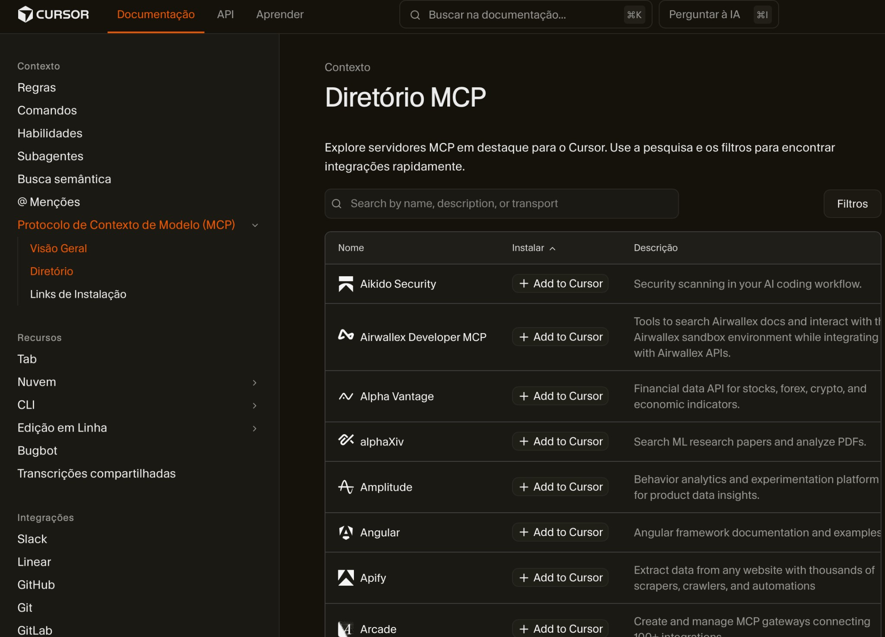
Exercício · MCP
Conectar o MCP do Notion
⏱ 5 minutos · Guia do Aluno — Exercício 11, Passo 1 (conexão antes do one-page)
📌
Mesmo fluxo do Bloco 6 do guia: Marketplace → Notion → conta → Connections na página-alvo.
1. Settings e Marketplace
Settings (
Cmd + Shift + J / Ctrl + Shift + J) → @cursor/marketplace → buscar Notion → Enable/Install → conectar a conta.2. Página no Notion
Abra a página (ou espaço) onde o MCP pode criar conteúdo; em ⋯ → Connections, autorize a integração do Notion MCP.
3. Teste rápido no chat
Peça: “Liste páginas ou databases que consigo acessar via Notion MCP.” — igual ao guia.
Checklist (guia — Passo 1)
# Marketplace (recomendado no curso) Settings → @cursor/marketplace → Notion → Enable/Install → conectar conta # Notion — permissão na página ⋯ → Connections → integração do MCP # Teste "Liste páginas ou databases que consigo acessar via Notion MCP."
Exercício · MCP
Notion — one-page para lideranças
⏱ ~10 min na sala (Passos 2–3) · Guia do Aluno — Exercício 11 (total 15 min)
Com o MCP já conectado (slide anterior), anexe
repos/cursor-para-pms/docs/analise-arenacash-q1.md e publique via MCP um one-page executivo no Notion.
Passo 2 — Gerar e publicar (Agent)
Cinco blocos na ordem do guia: TLDR, Contexto, Insights e problemas (com números), Oportunidades (impacto × esforço), Próximos passos. Instruir o agente a usar as ferramentas do MCP do Notion, não só colar texto no chat.
Passo 3 — Validar
Abra o Notion no navegador; confira renderização e se os números batem com o
.md da análise.
📖
Referência oficial do curso: guia interativo, exercício 11 — One-page no Notion — síntese para liderança (MCP).
Prompt-base (alinhado ao guia)
# Notion (MCP) — One-page (Arena Cash)
## Contexto
A partir de repos/cursor-para-pms/docs/analise-arenacash-q1.md:
## Tarefa
One-page em Markdown com: TLDR (1 frase); Contexto;
Insights e problemas (com números); Oportunidades (impacto/esforço);
Próximos passos (checklist). Tom para diretoria.
Publique no Notion como página filha [defina o pai] usando o MCP do Notion.
Retomando
Recap — casos de uso
📝
Notas de reunião: Organização por pessoa, templates e follow-ups — case mentorias.
📊
Analisando dados: MCPs + arquivos locais, Skills (SQL/Pandas), dashboards no contexto.
🔌
MCPs: Notion, Google Workspace, browser — trazer docs e dados para o contexto do Cursor.
📋
Documentação viva: One-page e notas no Notion (exercício com MCP) alinhados ao fluxo do PM.
🖼️
Apresentações: HTML, fontes, gráficos — Cursor + Skills (pptx, tema) para exportar e iterar.
Tudo que vamos usar na tarde — PRD, tarefas e protótipo do novo onboarding da Arena Cash
Pausa
☕ Pausa para o cafezinho
10–20 minutos
Tarde — 15:45–18:00
Protótipos + Start My Day
🚀 Tarde
15:45 – 18:00
Conteúdo
- Repo pessoal (GitHub público) para exercícios
- Criar PRD do novo fluxo de onboarding (
/create-prd) - Backlog em Markdown; MCP do Linear; épicos e issues no board
- Protótipo funcional do onboarding — Plan + localhost
- Subir projeto no GitHub pessoal
- Start My Day — transformar rotina matinal em fluxo no Cursor
Exercícios
- Repo pessoal — criar GitHub público (⏱ 20 min)
- Criar PRD do onboarding —
/create-prd(⏱ 10 min) - Backlog MD — épicos/tarefas (⏱ 15 min)
- MCP Linear — setup Marketplace (⏱ ~5 min)
- Linear — criar épicos/issues no board (⏱ 15 min)
- Protótipo funcional do onboarding — Plan + localhost (⏱ 25 min)
- Subir projeto no GitHub (⏱ 15 min)
- Start My Day — Plan + roteiro repetível (⏱ 20 min)
Exercício · Workflow
Criar PRD do novo onboarding
⏱ 10 minutos
3.6.1 — O fluxo de onboarding é output da análise anterior. Exercício: produzir o PRD com o command
/create-prd, reforçando análise + direcionais da companhia.
1. Reúna o contexto
Tenha à mão
docs/analise-onboarding-arenacash.md e os direcionais da companhia (ex.: memo estratégico e contexto do case).2. Rode
/create-prdNo Cursor, execute o command com o prompt de uma linha abaixo. O agente estrutura problema, objetivos, escopo e requisitos a partir do material no workspace.
3. Revise o entregável
Confira o
prd-*.md em documents/ antes de seguir para épicos, tarefas e Linear do fluxo de onboarding.Prompt sugerido (uma linha)
/create-prd crie um prd com base na analise feita e os direcionais da companhia.
💡
Dica — Se o comando pedir mais contexto, aponte explicitamente para
docs/analise-onboarding-arenacash.md e para os documentos de direcionais do case.Exercício · Breakdown
Quebrar PRD em épicos e tarefas
⏱ 15 minutos
3.6.2 — Com o PRD do onboarding pronto, gere o backlog em Markdown (
documents/backlog-onboarding.md): épicos e tarefas executáveis. Use .cursor/templates/Tasks Templates.md e o subagent PM. Em seguida: MCP do Linear e criação dos cards no board.
1. Abra o PRD e o template
Tenha o
prd-onboarding-arena-cash.md aberto e consulte .cursor/templates/Tasks Templates.md para a estrutura de épicos/tarefas.2. Use o subagent PM
No chat, ative o subagent
product-manager criado anteriormente. Peça para mapear épicos e quebrar cada épico em 3-5 tarefas.3. Crie o arquivo de backlog
Gere um arquivo
documents/backlog-onboarding.md com todos os épicos e tarefas estruturados (cenário atual, cenário desejado, DoD, prioridade, esforço).Prompt sugerido
# Com base no PRD e template de tarefas Com base em documents/prd-onboarding-arena-cash.md, proponha: - 3 épicos para o novo onboarding - 3 a 5 tarefas por épico - critérios de aceite por tarefa - prioridade (alto/médio/baixo) e esforço estimado Siga a estrutura de .cursor/templates/Tasks Templates.md e salve em documents/backlog-onboarding.md
📖
Guia do aluno — Exercício 12, Parte A (
12-projeto-final-parte4-historias.md).Exercício · MCP
Conectar o MCP do Linear
⏱ ~5 minutos
1. Abrir Configurações do Cursor
No Cursor, abra Settings. Atalho:
Cmd + Shift + J (Mac) ou Ctrl + Shift + J (Windows).2. Abrir Marketplace de MCPs
No final do menu lateral de Settings, clique em
@cursor/marketplace e busque por Linear.3. Ativar e conectar conta
Clique em Enable/Install e conecte sua conta do Linear ao Cursor.
4. Criar projeto no Linear
Antes de criar épicos/issues/tasks, crie um projeto no Linear (ou confirme o projeto da turma) para receber o backlog.
📖
Guia do aluno — Exercício 12, Parte B (
12-projeto-final-parte4-historias.md).Checklist rápido
# Setup via Marketplace 1. Settings (Cmd/Ctrl + Shift + J) 2. @cursor/marketplace 3. Buscar Linear 4. Enable/Install + login Linear 5. Criar/confirmar projeto no Linear # Teste de conexão "Liste os projetos do Linear que tenho acesso."
Exercício · MCP
Linear — épicos e issues
⏱ 15 minutos
3.6.3 — Com
documents/backlog-onboarding.md pronto e o MCP do Linear ativo, crie no Linear os épicos e issues (cards no board) espelhando o backlog — pelo Cursor.
1. Projeto primeiro
Abra o Chat no modo Agent (ou use o subagent
product-manager). Confirme que o projeto alvo no Linear já existe (ou peça para criar agora).2. Pedido ao agente
Peça para criar ou alinhar épicos e issues no projeto/time escolhido, a partir do backlog e do PRD.
3. Conferir no Linear
Abra o app Linear e valide títulos, descrições e critérios de aceite antes do protótipo.
📖
Guia do aluno — Exercício 12, Parte C (
12-projeto-final-parte4-historias.md).Prompt (exemplo)
# Linear (MCP) — Do backlog aos cards Se o projeto do onboarding ainda não existir, crie primeiro o projeto [nome do projeto] no Linear. Com base em documents/backlog-onboarding.md e documents/prd-onboarding-arena-cash.md: - Crie ou alinhe épicos no Linear aos do backlog - Para cada épico, crie as issues com título, descrição e critérios de aceite - Use o projeto/time [seu projeto na turma]
Exercício · Plan
Protótipo funcional em localhost
⏱ 25 minutos
Com PRD e backlog prontos, siga o fluxo do guia: ASCII primeiro, depois MVP simples com design system Arena Cash em uma pasta específica dentro de
projects/, e por fim atualização das tasks no Linear.
1. Validar em ASCII
Peça uma primeira versão em ASCII para revisar a ideia do protótipo antes de criar arquivos.
2. MVP simples com design system
Após validar o ASCII, implemente o MVP em localhost em
projects/arena-cash-onboarding-mvp/ usando design-system-arenacash.md.3. Sincronizar execução no Linear
Mover para Done as tasks concluídas e deixar comentários objetivos sobre o que foi entregue.
📖
Passo a passo — Consulte o exercício 10a-prototipo-plan-localhost.md na pasta de exercícios.
Exemplo de prompt (mesmo espírito do guia)
quero agora criar um prototipo simples de mvp para implementar o novo fluxo de onboarding. quero utilizar o design system da arena cash. qureo que vc me manda um primeira versao em ASCII para validar a ideia do prototipo antes de criarmos. quero ja atualizar as tasks relacionadas no linear, movendo para done o que for feito e deixando comentarios do que foi feito.
Exercício · Tarde
Subir o projeto no GitHub pessoal
⏱ 15 minutos
Última etapa: publicar o projeto do novo fluxo de onboarding no seu repositório pessoal do GitHub — versionar documentos e código.
1. Criar repo vazio no GitHub
New repository → nome
meu-produto-curso (ou o que preferir) → sem README inicial.2. Inicializar Git e fazer push
Na pasta do projeto (ex.:
projects/meu-produto/): git init, git add ., git commit, git remote add origin, git push.3. Conferir no navegador
Abra o link do repositório e confira se documentos e código foram enviados.
Comandos resumidos
# Na pasta do projeto (ex.: projects/meu-produto) git init git add . git commit -m "chore: initial commit" git remote add origin https://github.com/SEU-USUARIO/meu-produto-curso.git git branch -M main git push -u origin main
📖
Passo a passo — Consulte o exercício 15-github-subir-projeto.md na pasta de exercícios.
Exercício · Tarde
Start My Day — sua rotina matinal
⏱ 20 minutos
Fechamento prático (além do protótipo): definir um fluxo repetível para começar o dia — no modo Plan (ou Agent), usando o que você já usa no curso (métricas, Linear, Notion, agenda, etc.).
1. Modo Plan
Peça um plano para criar ou atualizar um arquivo de roteiro (ex.:
start-my-day.md) que organize sua manhã em passos claros.2. O que incluir
Escolha o que faz sentido para você: checar métricas, status no Linear, agenda do dia, resumo do que importa — na ordem que você realmente seguiria.
3. Iterar
Refine com o agente até ter algo que você consiga rodar de novo amanhã (mesmo roteiro, contexto novo).
💡
Ideia — O demo “Start my day” no início do curso mostra o espírito: um comando que estrutura o dia. Aqui você desenha sua versão no workspace.
Exemplo de pedido (Plan)
# Start My Day — personalize ao seu contexto
Quero um plano para criar um roteiro matinal em Markdown no repositório:
puxar o que preciso do workspace (docs, dados, backlog) e um próximo passo
acionável para hoje — sem texto genérico, adaptado ao meu cenário.